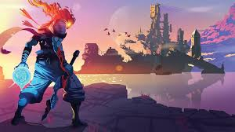
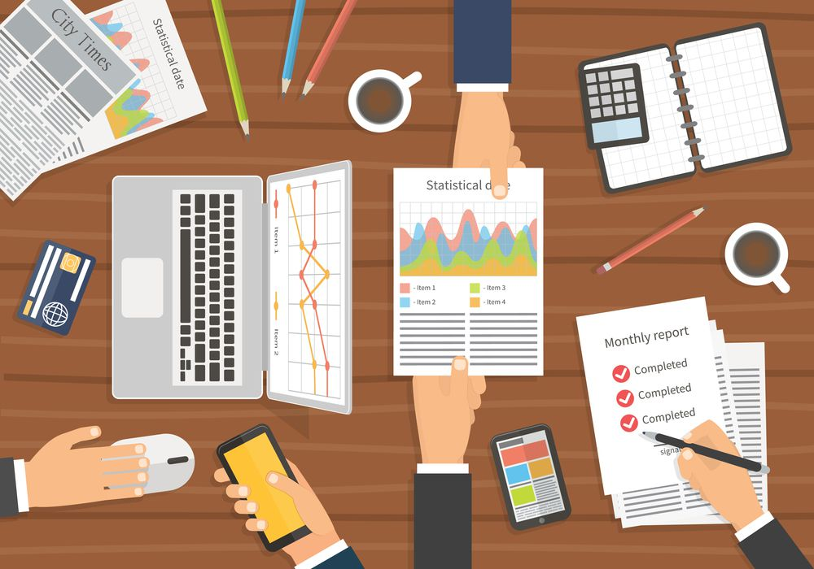

Meus Projetos

Messed: Jogo de Exploração Espacial
Um jogo 2D desenvolvido em C++ com OpenGL, onde jogadores exploram o esgoto, enfrentam monstros para escapar junta de seus amigos
Sabor na Rua: Site para Carrinho de Lanche
Um site dinâmico desenvolvido com Next.js e TypeScript, oferecendo cardápio interativo, pedidos online e localização do carrinho. Estilizado com CSS para um design moderno e responsivo.

KivDesk: Gestão Financeira Desktop
Uma aplicação desktop em C# para gestão financeira, com relatórios, orçamentos e integração com banco de dados. Interface web complementar usa HTML e JavaScript.